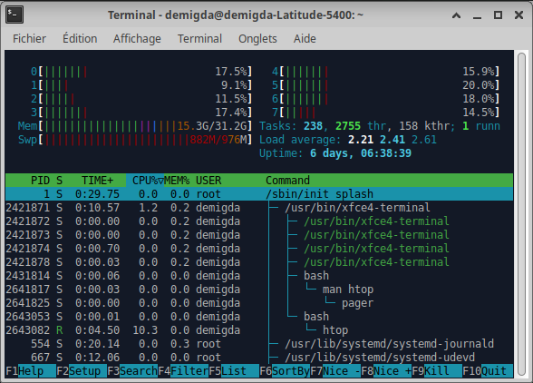
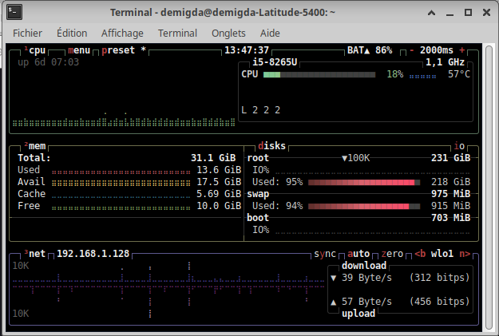

Accès à distance et processus
Accès à distance
Les serveurs sont usuellement installés dans une salle dédiée avec contrôle d’accès, parfois à plusieurs centaines (ou milliers) de km de votre poste de travail. Par exemple, le serveur pourrait être à Clermont-Ferrand alors que votre bureau est à Aurillac.
Bien évidement, vous n'allez pas faire l'aller-retour à Clermont-Ferrand, à chaque ligne de commande que vous souhaitez exécuter sur le serveur. Imaginez que vous deviez régulièrement intervenir sur le serveur, vous passeriez votre temps à faire l’aller-retour Aurillac/Clermont-Ferrand !
SSH
Il est ainsi nécessaire de pouvoir accéder au serveur à distance afin d’éviter de tels déplacements chronophages. Pour ce faire, on utilise SSH (secure shell) afin d’envoyer, via Internet, des lignes de commande au serveur, ce en à peine quelques millisecondes. Dans les faits, cela revient à ouvrir un terminal du serveur depuis votre poste de travail.

SSH suit une architecture client-serveur avec :
- un client SSH sur le poste de travail ;
- un serveur SSH sur le serveur.
Le client SSH permet d’initier une connexion SSH (≈ session SSH) avec le serveur SSH. Une fois la connexion établie, le client SSH peut alors envoyer des commandes shell au serveur SSH qui les exécutera, et en retournera le résultat.
Côté client, exécute sur le serveur (shell interactif si non précisé).
Les Clés SSH
Renseigner son un mot de passe à chaque fois qu’on utilise SSH est enquiquinant, et potentiellement peu sécurisé si le mot de passe est trop faible. On préfère ainsi généralement utiliser une clé SSH permettant aux utilisateurs de se connecter au serveur sans mot de passe.
Le principe est alors très simple, l'utilisateur :
- génère une paire de clés via .
- transmet la clef publique au serveur (dans ).
- indique au client SSH la clef privée à utiliser (cf suite).
À chaque connexion SSH, le client donne alors une preuve qu'il a connaissance de la clef privée, que le serveur est capable de vérifier grâce à la clef publique.
Les alias SSH
Retenir et écrire l’adresse IP du serveur à chaque connexion au serveur via SSH est
enquiquinant. Pour éviter cela, on utilise des alias SSH, permettant d'écrire au lieu de . Les alias sont définis dans la configuration du client SSH comme suit :
L’autocomplétion du shell fonctionne aussi pour les alias SSH.
Les processus
Un processus représente un programme en cours d'exécution. Il est identifié par un PID (Process Identifier) permettant de le contrôler et de le monitorer. Lorsque vous exécutez des lignes de commandes, le processus créé un sous-processus correspondant à la commande exécutée. est ainsi le processus père du processus ainsi lancé :
Le PID du processus père est appelé PPID (Parent PID).
Processus d'arrière-plan
Par défaut, un processus est lancé en premier-plan (foreground), c'est à dire qu'il bloque le terminal le temps de son exécution. Il est cependant possible de le lancer un arrière-plan (background) en suffixant la ligne de commande par . Ainsi, vous pourrez exécuter d'autres lignes de commandes, sans devoir attendre que les processus d'arrière-plan se terminent. Bien que les processus d'arrière-plan puissent écrire dans le terminal, ils ne peuvent récupérer les événements claviers.
Il peut être très difficile d'écrire de nouvelles lignes de commandes lorsque, en même temps, les processus d'arrière-plan affichent du texte dans le terminal.
Il est possible de transformer un processus de premier-plan en un processus d'arrière-plan, et inversement. Pour cela on utilise pour stopper le processus de premier plan, permettant alors d'utiliser les commandes suivantes :
- (background): pour le relancer en arrière plan.
- (foreground): pour le relancer en premier plan.
- : liste les processus en arrière plan.

Fermeture d'une session
Lorsqu'une session SSH est fermée, le terminal associé l'est aussi. Usuellement, seuls les processus de premier-plan sont tués. À sa mort, chaque processus père décide s'il tue (ou non) ses fils. Les fils laissés vivant deviennent orphelins, et sont alors adoptés par le processus de PID 1 : , ancêtre de tous les processus.
Ainsi, lorsqu'on lance de longs calculs, non seulement le poste de travail doit rester allumé en permanence afin de maintenir la session, mais toute perte de connexion réseau (e.g. itinérance, panne réseau, etc) peut aussi entraîner sa fermeture. Il y a alors de forts risques que les calculs soient interrompus, et n'arrivent pas à terme. Cela peut ainsi entraîner des pertes de données si les résultats ne sont pas sauvegardés.
Il est possible de déshériter manuellement des processus via .
Bien qu'il soit possible d'adopter des processus via , cela ne fonctionne pas pour les processus orphelins.
Le fonctionnement réel est un peu plus complexe :
- Ouverture du terminal :
- Un terminal (PTY) est créé dans le noyau Linux.
- Une session (attachée au terminal) est créée avec le Shell comme leader de session.
- Fermeture du terminal :
- Le terminal est détruit.
- Le noyau notifie les processus en premier-plan ainsi que le leader de session ().
- Chaque processus notifié (dont ) décide s'il se suicide (et s'il tue ses fils).
Historiquement, les terminaux étaient des télétypes (TTY), i.e. un écran/clavier connecté au mainframe. Sous Linux les terminaux sont généralement des pseudo-TTY (PTY), qui simulent donc un terminal physique. Le PTY est composé d'un :
- PTM (master) : gère l'interaction avec l'utilisateur (clavier, souris, affichage).
- PTS (slave) : gère l'interaction avec les processus (e.g. ).
Screen
La commande permet d'éviter cela en ayant une sorte de "terminal" que l'on peut quitter et rejoindre à volonté, et qui n'est pas détruit lorsque la connexion SSH est fermée.

Nous avons configuré (fichier afin d'en simplifier l'usage.
À l’instar des onglets du terminal, permet de manipuler plusieurs fenêtres :
- : créer une fenêtre.
- : renommer la fenêtre.
- : choisir une fenêtre.
Le nom de la fenêtre courante est affichée en surbrillance en bas de la région.
L’écran de est constitué de régions pouvant chacune afficher une fenêtre. Chaque région peut être subdivisée verticalement ou horizontalement :
- : découper la région verticalement.
- : découper la région horizontalement.
- : supprimer la région courante.
- : aller dans une autre région.
Chaque région est vide à sa création. Vous pourrez alors soit :
- créer une nouvelle fenêtre ().
- choisir une fenêtre à afficher ().
Lorsqu'il y a au moins une division verticale de l'écran, copier plusieurs lignes se fait en entrant en mode scroll (), que vous pourrez quitter via touche . Le mode scroll permettra alors de déplacer le curseur via les flèches du clavier, ou la molette de la souris, puis de débuter et terminer une sélection via la touche espace du clavier. Le contenu sélectionné sera alors placé dans le presse-papier.
Les services
Pour des processus qui doivent s'exécuter au démarrage de l'ordinateur (e.g. gestion du bluetooth, serveur Web, serveur de fichiers, etc), on utilise usuellement des services. Les services, aussi appelés daemon, sont des processus d'arrière-plan contrôlés par . Par exemple le serveur SSH utilise le daemon .
Le "d" à la fin du nom signifie daemon.
Ils sont contrôlés via la commande (system control) :
- .
- : (des)activer le démarrage automatique du service au boot.
- : afficher les logs du service (possède de très nombreuses options).
$ systemctl status ssh
● ssh.service - OpenBSD Secure Shell server
Loaded: loaded (/usr/lib/systemd/system/ssh.service; disabled; preset: enabled)
Active: active (running) since Mon 2026-05-04 14:33:08 CEST; 10min ago
TriggeredBy: ● ssh.socket
Docs: man:sshd(8)
man:sshd_config(5)
Process: 583822 ExecStartPre=/usr/sbin/sshd -t (code=exited, status=0/SUCCESS)
Main PID: 583823 (sshd)
Tasks: 1 (limit: 38227)
Memory: 2.2M (peak: 5.5M)
CPU: 63ms
CGroup: /system.slice/ssh.service
└─583823 "sshd: /usr/sbin/sshd -D [listener] 0 of 10-100 startups"
Les services sont décrits par un fichier dont le format se rapproche des fichiers .
La commande est aujourd'hui obsolète et a été remplacée par .
Les ressources
Pour exécuter un programme, l'ordinateur utilise :
- Un CPU : pour exécuter les instructions.
- La RAM (et des caches) : pour l'état du programme.
Lorsqu'on exécute des calculs, il est important d'estimer ses besoins en fonction des ressources à dispositions. Par exemple, il est inutile de lancer un calcul nécessitant 64Go de RAM sur un poste de travail qui n'en dispose que de 16Go. De même, il n'est pas utile d'utiliser un serveur de calculs si le poste de travail suffit.
Les ressources à disposition
La première étape est ainsi de déterminer les ressources à disposition :
cpufetch
$ cpufetch
.#################.
.#### ####. Name: Intel Core i5-8265
.## ### uArch: Comet Lake
## :## ### Technology: 14nm
# ## :## ## Max Freq: 3.900 GHz
## ## ######. #### ###### :## ## Cores: 4 cores (8 threads
## ## ##: ##: ## ## ### :## ### AVX: AVX,AVX2
## ## ##: ##: ## :######## :## ## FMA: FMA3
## ## ##: ##: ## ##. . :## #### L1i Size: 32KB (128KB Total)
## # ##: ##: #### #####: ## L1d Size: 32KB (128KB Total)
## L2 Size: 256KB (1MB Total)
###. ..o####. L3 Size: 6MB
######oo... ..oo####### Peak Perf.: 499.20 GFLOP/s
o###############o neofetch
$ neofetch
`-/osyhddddhyso/-` demigda@demigda-Latitude-5400
.+yddddddddddddddddddy+. -----------------------------
:yddddddddddddddddddddddddy: OS: Xubuntu 24.04.3 LTS x86_64
-yddddddddddddddddddddhdddddddy- Host: Latitude 5400
odddddddddddyshdddddddh`dddd+ydddo Kernel: 6.8.0-78-generic
`yddddddhshdd- ydddddd+`ddh.:dddddy` Uptime: 6 days, 7 hours, 3 mins
sddddddy /d. :dddddd-:dy`-ddddddds Packages: 4303 (dpkg), 28 (snap)
:ddddddds /+ .dddddd`yy`:ddddddddd: Shell: bash 5.2.21
sdddddddd` . .-:/+ssdyodddddddddds Resolution: 1366x768
ddddddddy `:ohddddddddd DE: Xfce 4.18
dddddddd. +dddddddd WM: Xfwm4
sddddddy ydddddds WM Theme: Default
:dddddd+ .oddddddd: Theme: Greybird [GTK2/3]
sdddddo ./ydddddddds Icons: elementary-xfce-dark [GTK2/3]
`yddddd. `:ohddddddddddy` Terminal: xfce4-terminal
oddddh/` `.:+shdddddddddddddo Terminal Font: DejaVu Sans Mono 9
-ydddddhyssyhdddddddddddddddddy- CPU: Intel i5-8265U (8) @ 3.900GHz
:yddddddddddddddddddddddddy: GPU: Intel WhiskeyLake-U GT2 [UHD Graphics 620]
.+yddddddddddddddddddy+. Memory: 18416MiB / 31943MiB
`-/osyhddddhyso/-`
Le CPU possède un à plusieurs processeurs contenant eux-même plusieurs cœurs physiques. Un cœur physique peut posséder des cœurs virtuels (parfois appelés threads) lui permettant d'exécuter plusieurs programmes simultanément.
Estimer ses besoins
Le meilleur moyen d'estimer les ressources nécessaires à un calcul est de tout simplement l'exécuter, puis de regarder les ressources consommées. Cependant, lorsqu'on tente d'en déterminer les besoins, on souhaite éviter d'exécuter les calculs dans leur intégralité :
- si les calculs sont déjà finis, on a ainsi les résultats et il n'est alors plus nécessaire d'en estimer les besoins.
- si les calculs sont très lents, on ne va pas attendre 100 an qu'ils se terminent.
On va ainsi lancer les calculs sur des sous-ensembles de données (e.g. 1 entrée, 10 entrées, 100 entrées, etc), afin de pouvoir en estimer les besoins par extrapolation. Afin d'afficher les ressources consommées par les calculs (ainsi que diverses autres statistiques), on utilise la commande (possède de très nombreuses options) :
Nous vous fournissons la commande , combinant les commandes et :
Une simple valeur (e.g. moyenne, valeur maximale) ne suffit pas pour se représenter la consommation réelle des ressources. En effet, la consommation peut augmenter au cours du temps (e.g. fuite mémoire), ou connaître des pics ponctuels (dont il conviendra d'identifier la cause). Pour cela nous vous fournissons la commande :
Pour des utilisations plus avancées, le paquet sysstat contient de nombreux outils permettant de monitorer diverses métriques, ainsi que la production de grahiques.
Les serveurs de calculs
Sur certains serveurs de calculs, notamment sur les clusters, il est fréquent d'exécuter son code via un ordonnanceur (scheduler). On précise alors les ressources dont on a besoin (CPU, RAM, temps), et l'ordonnanceur se charge de planifier les calculs, et d'en réserver les ressources requises. Il est ainsi important d'anticiper ses besoins en ressources, et de ne pas en consommer plus que nécessaire.
Cependant, il arrive aussi que certains serveurs de calculs soient plus "libre services", où il convient de respecter certaines règles de bienséance :
- vérifier s'il y a d'autres calculs en cours, avant de lancer les siens.
- vérifier si d'autres personnes sont connectées au serveur.
- ne pas monopoliser les ressources, ou prévenir au besoin.
En général, le serveur de calcul fourni une interface web permettant de suivre en temps réel l'utilisation et la charge du serveur de calcul. Les deux commandes suivantes sont toutefois intéressantes :
who (utilisateurs connectés)
last (dernières connexions)
Monitorer les calculs
Il arrive fréquemment que des calculs ne s'exécutent pas correctement, que ce soit en plantant, en produisant des résultats erronés, en prennant bien trop de temps, etc. à cause :
- d'un bug.
- de la saturation d'une ressource (e.g. mémoire vive).
- d'un dépassement du temps alloué (cf ordonnanceur).
- etc.
Il est ainsi important d'en monitorer l'état et la progression afin de réagir au plus tôt, et de ne pas attendre plusieurs jours alors qu'un problème est survenu quelques minutes après le lancement des calculs.
Monitorer l'état des processus
Il est important de suivre l'état de ses calculs, d'autant plus si ces derniers sont long. En effet, il est inutile d'attendre plusieurs jours qu'un calcul se finisse s'il a planté quelques secondes après son lancement.
La commande (process status) liste les processus (par défaut, du terminal courant) :
- : tous les processus.
- : les processus de pid .
- : tous ceux des utilisateurs .
La commande produisant un meilleur affichage vous sera fournie.
$ lsps
PID S STIME USER COMMAND
1562935 S 12:28 demigda bash
1669370 S 14:27 demigda \_ sleep 10d
1669395 R 14:27 demigda \_ ps --forest -o pid,state,stime,user,command
Le status du processus est décrit par une lettre :
- R (running) : en cours d'exécution.
- S (sleep) : en attente d'un événement.
- Z (zombie) : terminé, mais pas détruit par son père.
- D (device) : en attente d'un événement d'I/O.
Monitorer l'exécution
Le fait que les calculs soient en cours d'exécution n'est pas suffisant afin de garantir l'absence de problèmes. Il arrive que, pour des raisons diverses et variées (plus de RAM disponible, boucle infinie, complexité algorithmique, etc.), un calcul ne progresse plus ou très lentement. Il se peut même que les résultats produits soient invalides.
On souhaite ainsi pouvoir consulter ce que le processus a fait, et est en train de faire. Pour cela, il est nécessaire de produire des logs horodatés, qui permettront non seulement de voir la progression des calculs, mais aussi de faciliter les opérations de débogage.
exécute , et préfixe chaque ligne affichée par son timestamp.
Écrire dans un support persistant (e.g. fichier, base de données) est très lent. Regrouper les écritures de logs dans un tampon (buffer) afin de procéder à une écriture unique, à interval régulier, est plus rapide. Cependant cela peut engendrer des pertes si le processus plante avant l'écriture des logs. On peut alors utiliser un intermédiaire qui collectera les logs, et se chargera de leur enregistrement. De même pour l'enregistrement des résultats finaux ou intermédiaires.
Il est bien évidemment possible d'afficher une barre de progression avec une estimation du temps restant. Cependant, il est recommandé de séparer l'information de sa représentation. Le processus de calcul peut donner sa progression, régulièrement ou sur demande, e.g. via ses logs. Cependant, l'affichage de la progression devrait être la responsabilité d'un processus tiers.
Monitorer la consommation des ressources
Des erreurs de programmation ou d'estimation des besoins peuvent conduire à une surconsommation des ressources de l'ordinateur, pouvant fortement ralentir la progression, voire faire planter le processus (e.g. plus de RAM disponible). Suivre (et d'estimer) l'évolution de la consommation des ressources permet d'éviter de laisser un calcul tourner si on sait qu'il va planter dans les prochaines heures.

btop

est une version interactive de permettant de monitorer les processus en temps réel. , quant à lui, permet de suivre les ressources de l'ordinateur, plus que les processus.
Comme , fournit lui aussi les options et afin de filtrer les processus à afficher. Il fournit aussi d'autres options comme permettant de filtrer les processus à afficher en fonction de la ligne de commande correspondante.
permet de mettre en pause (puis de reprendre) la mise à jour de l'affichage de .
Arrêter et reprendre les calculs
Arrêter les calculs
Si un processus de calcul de fonctionne pas correctement, e.g. ne progresse plus, produit des résultats incorrects, on ne va pas attendre des jours voire des semaines qu'il se termine. Vous connaissez déjà pour arrêter un processus de premier-plan, mais il est aussi possible de lui envoyer des signaux pour en forcer l'arrêt :
- : tue le processus.
- : tuer les commandes .
Il existe différent types de signaux, chacun avec sa propre signification () :
- (terminate) : arrêt du processus (défaut).
- : tue le processus (ne peut être ignoré).
- (hang up): le terminal a été fermé.
- (interuption): correspond à .
- / : mettre en pause l'exécution.
- (continue): reprendre l'exécution.
- / (user): pour un usage personnalisé.
Ces signaux (à l'exception de ) peuvent être intercepté en Python :
Il est alors courant d'utiliser le signal afin d'afficher la progression lors de sa réception.
Reprendre les calculs
Vous imaginez bien que si les calculs plantent (ou sont arrêtés) après des heures, voire des jours, ce serait un gâchis que de devoir tout recommencer, au risque de tout perdre encore une fois lorsque les calculs plantent à nouveau au bout de quelques heures/jours. Il est ainsi important de sauvegarder régulièrement ses résultats (finaux ou intermédiaires), et de prévoir un moyen de reprendre les calculs à partir de la dernière sauvegarde.
Il est aussi important de s'assurer de la reproductibilités des calculs, notamment si vous utilisez des valeurs générée aléatoirement, en utilisant des graines (seed) fixées afin de pouvoir :
- partager ses résultats en permettant leur vérification et reproduction.
- reproduire des bugs en vue de les corriger (conserver des logs peut aussi aider).
Pour aller plus loin : le boot
🕮 `systemd` est le processus de PID 1, ancêtre de tous les processus.
💡 Pour des raisons de retro-compatibilités, vous trouverez des références à `initd` (dont des fichiers de configurations), qui était utilisé avant d'être remplacé par `systemd`.
💡 Pour des raisons de retro-compatibilités, vous trouverez des références à `initd` (dont des fichiers de configurations), qui était utilisé avant d'être remplacé par `systemd`.
Linux utile les dossiers suivants pour stocker diverses informations sur l'état du système et ses processus :
- (processus) : les processus.
- (device) : communication avec les périphériques.
- (runtime) : les services.
- (system) : le système et ses périphériques.
Cependant, il est rare de lire soit-même ces fichiers. On utilise plutôt des commandes affichant les informations désirées.